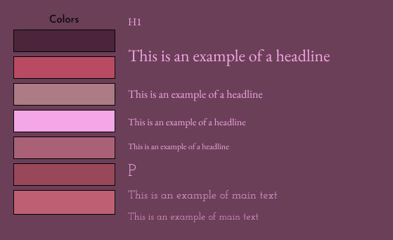

Portfolio Asignment

Her et et eksempel på et styletile med mange forskellige farver i mest varme røde, lyserøde og lidt beige toner. Primære er Mørke Lilla, sekundær er Rød og Accent farven er Pink. Jeg har lavet det her styletile ved lidt hjælp af en farvefinder online og figma. Hvert bogstav i menuen står for den opgave det omhandler.